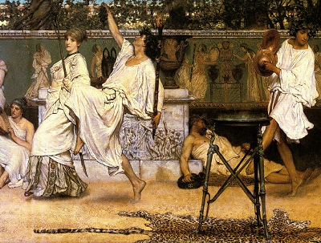

Sacred Texts Classics Euripides
|  | Euripides and His Ageby Gilbert Murray[1913] |
This is a complete survey of the drama of Euripides, along with the historical, social and religious context in which he wrote. It includes synopses of all of the plays, including mentions of fragmentary and lost plays, and also serves as an introduction to the mechanics of Greek drama, including 'the messenger,' the 'deus ex machina,' and the 'Chorus.' Gilbert Murray (1886-1957) was a British classicist at Oxford, who translated much of the body of Greek drama during the early 20th century. His translation of The Trojan Women is also available at this site. Murray was associated with Jane Harrison, and contributed to her Prolegomena to the Study of Greek Religion and Themis.